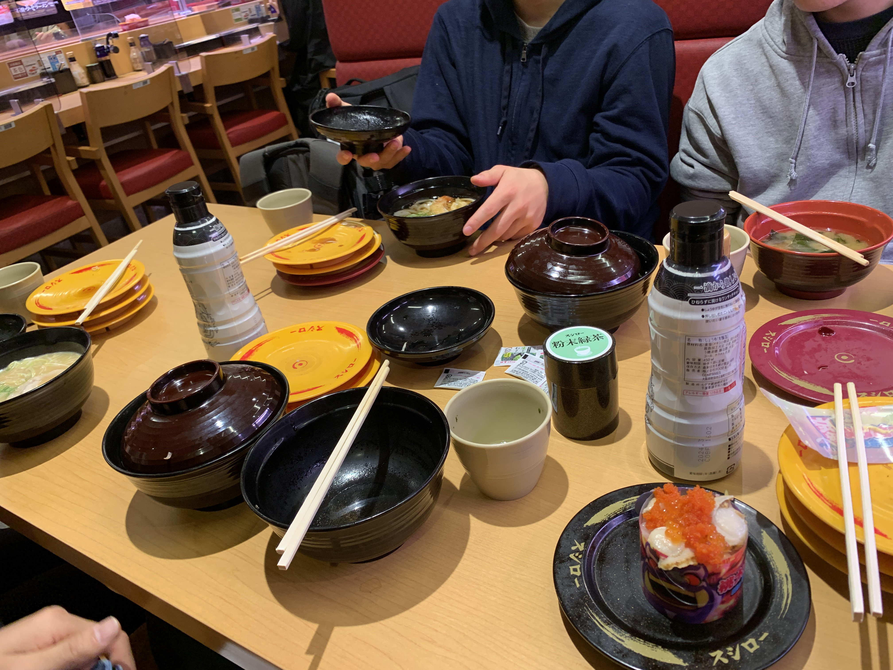

やったこと
- Cコンパイラ開発
- 無作為抽出寿司
- sushiro
無作為抽出寿司について
今回はえぬきょくも参加した[1]。彼は普通に乱数調整が上手くて事なきを得ていた[2]。
ハイライトはどう考えても_rnkeが1200円くらいの大皿メニューを引き当てていた事だった。あまりに不憫すぎる。
ところでスシローガチャが壊れており[3]、席に座るや否やpuripuri2100が実装を始めてくれてかなり面白かった。
インデックスが降ってくるので辛いという説もあり、家に帰ってからsushiroを書いた[4]。
非同期Rust難しいね〜とのことなので、勧められた並行プログラミング入門やtokio tutorialなどをやっていきたい。実際のところ、TSで触れるふんわりasyncくらいしか知らないので興味がある。
寝たのが4時なのだけ覚えている。最悪だ。
脚注
- 新メンバー加入はテンションが上がるね
- 許すな
- サーバー止めたのかな
- 貴重な過集中ポイントをこんなところで消費してしまった